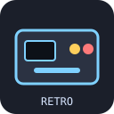
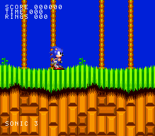
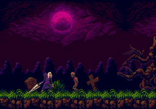
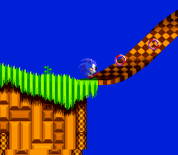
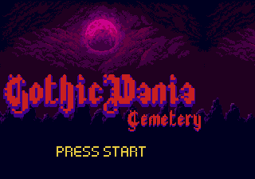
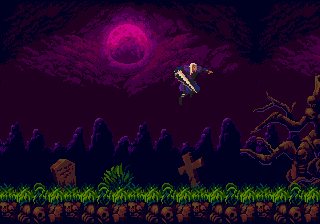

Dual-console Game Build
Generate a real PVSnesLib/SGDK project and build a playable ROM from the same editor. Choose the target, mapper, ROM profile and splash, then validate the checksum.

Godot Retro EngineIndependent fork of Godot 4.7
Godot Retro Engine is a free, open-source Godot fork for building, porting and validating SNES and Mega Drive games. Real SDKs, real ROMs, real emulators — with source-level adapters for the games that deserve more than a binary translation.

Fork features
The fork keeps Godot's workflow and adds the parts a retro project actually needs: toolchains, asset converters, ROM profiles, emulator feedback and game-specific port adapters.
Generate a real PVSnesLib/SGDK project and build a playable ROM from the same editor. Choose the target, mapper, ROM profile and splash, then validate the checksum.
Dedicated adapters rebuild game logic for the other CPU instead of interpreting a 68000 or 65816 binary in real time. Sonic 2 and Gothicvania ship as working examples.
Bring Sprite2D, AnimatedSprite2D, TileMapLayer, collisions, cameras and UI from a Godot scene into a portable actor and stage runtime for both consoles.
Stage, sprite, animation, palette, collision, audio, input, state graph and code editors share one project format and one build pipeline.
MIDI, module and sampled audio become SNESMOD/BRR or YM2612/PSG VGM. SFX can be synthesized, converted and previewed before they reach the ROM.
Run the built ROM in a real libretro core, inject pad input, step frames, rewind and inspect audio — without leaving the editor.
LoROM, HiROM, ExHiROM, MSU-1, FastROM and Mega Drive mapper profiles, with header, size, checksum and SD2SNES readiness checks.
Cross-platform exports warn you when manual work is required, and generated projects
are named _snes_export / _md_export so they never get confused with the source.
Targets
PVSnesLib 4.6, 4bpp tiles, Mode 1, OBJ bands, HDMA colour math, BRR samples, SNESMOD music and LoROM/HiROM/ExHiROM images with MSU-1 support.
SGDK 2.11, H40/H32, 4bpp packed tiles, planes A/B, hardware sprites, XGM2 PCM/FM music, PSG sound and linear mapper profiles with a real SEGA header.
Source-level ports
A 3.58 MHz 68000 cannot be interpreted by a 65816 in real time, and vice versa. The fork ships per-game adapters that read the original assets and rebuild the game against the target SDK.

SNES → MEGA DRIVEA complete PVSnesLib homebrew rebuilt for SGDK: original level pages, collision, hero physics, sword combat, three enemy types, title art and music.

MEGA DRIVE → SNESEHZ Act 1 rebuilt for the 65816: original chunk layout, collision, rings, badniks, springs, monitors, loops, corkscrew, Tails follower and SMPS-derived music.
Cross-platform export is a starting point, not magic.
The editor shows a warning, asks for manual adjustments, and creates the result as
your_game_snes_export / your_game_md_export.
Workflow
Open a PVSnesLib, WLA-DX or SGDK project, or import a Godot scene. Use the stage, sprite, animation, palette and collision editors to shape the game.
Game Build writes a standalone project with converted assets, chooses the ROM profile, runs the real SDK and validates the resulting image.
The ROM boots in a real emulator core. Press buttons, step frames, rewind, inspect the audio stream and fix what the preview shows you.
Showcase
Every image below comes from a generated ROM running in the editor's emulator preview.


Download
Grab the latest editor build and point it at your PVSnesLib or SGDK project. The fork is open source; releases are published on GitHub.
Download on GitHub ReleasesLatest tagged build: 0.1.60 · Godot 4.7 fork
FAQ
Short answers to the questions a retro port usually raises.
No. Godot Retro Engine is an independent fork of Godot 4.7, focused on SNES and Mega Drive development. It is not affiliated with or endorsed by the Godot Foundation.
No. Binary translation between 65816 and 68000 is not practical in real time. The fork uses source-level adapters built per game; Sonic 2 and Gothicvania are the reference implementations.
No. The editor and toolchains are open source. You supply your own legally obtained source project, assets and ROMs. The original files are never modified by the exporters.
Yes. Linux is built natively. Windows is cross-compiled with MinGW-w64. macOS is built with osxcross as a universal x86_64 + arm64 app. Release archives are on GitHub.
Not always. SNES and YM2612 audio use real console formats and original samples where available, but some envelopes, timing and transcriptions remain approximations.